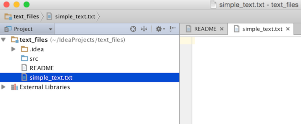

Tree Structure View
This tutorial is meant to illustrate how the project tree structure view appearance can be modified programmatically. If you need to know more about basic concepts of a project view in IntelliJ-based IDEs, please refer to Exploring The Project Structure of IntelliJ IDEA Web Help.
Series of step below show how to filter out and keep visible only text files and directories in the Project View Panel.
Pre-requirements
Create an empty plugin project. See Creating a Plugin Project.
1. Register Custom TreeStructure Provider
Add new treeStructureProvider extension to the plugin.xml
<extensions defaultExtensionNs="com.intellij">
<treeStructureProvider implementation="org.intellij.sdk.treeStructureProvider.TextOnlyTreeStructureProvider"/>
</extensions>
2. Implement Custom TreeStructureProvider
To provide custom Structure View behaviour you need to implement TreeStructureProvider interface.
public class TextOnlyTreeStructureProvider implements TreeStructureProvider {
@NotNull
@Override
public Collection<AbstractTreeNode> modify(@NotNull AbstractTreeNode parent, @NotNull Collection<AbstractTreeNode> children, ViewSettings settings) {
return null;
}
@Nullable
@Override
public Object getData(Collection<AbstractTreeNode> collection, String s) {
return null;
}
}
3. Override modify() method
To implement Tree Structure nodes filtering logic, override modify() method.
The example below shows how to filter out all the Project View nodes except those which correspond to text files and directories.
// Copyright 2000-2020 JetBrains s.r.o. and other contributors. Use of this source code is governed by the Apache 2.0 license that can be found in the LICENSE file.
package org.intellij.sdk.treeStructureProvider;
import com.intellij.ide.projectView.*;
import com.intellij.ide.projectView.impl.nodes.PsiFileNode;
import com.intellij.ide.util.treeView.AbstractTreeNode;
import com.intellij.openapi.fileTypes.PlainTextFileType;
import com.intellij.openapi.vfs.VirtualFile;
import org.jetbrains.annotations.*;
import java.util.*;
public class TextOnlyTreeStructureProvider implements TreeStructureProvider {
@NotNull
@Override
public Collection<AbstractTreeNode> modify(@NotNull AbstractTreeNode parent,
@NotNull Collection<AbstractTreeNode> children,
ViewSettings settings) {
ArrayList<AbstractTreeNode> nodes = new ArrayList<>();
for (AbstractTreeNode child : children) {
if (child instanceof PsiFileNode) {
VirtualFile file = ((PsiFileNode) child).getVirtualFile();
if (file != null && !file.isDirectory() && !(file.getFileType() instanceof PlainTextFileType)) {
continue;
}
}
nodes.add(child);
}
return nodes;
}
@Nullable
@Override
public Object getData(@NotNull Collection<AbstractTreeNode> selected, @NotNull String dataId) {
return null;
}
}
4. Compile and Run the Plugin
Compile and run the code sample from this tutorial. Refer to Running and Debugging a Plugin.
After going through the steps described above you can see only text files and directories belonging to a project in the Project View.

Check out plugin source code and build the project to see how TreeStructureView provider works in practice.